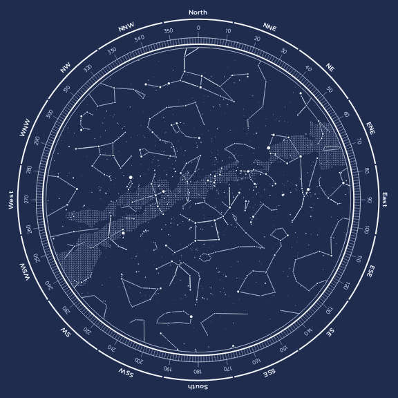

✦ Guida al cielo notturno ✦
Le figure immortali del cielo — miti, stelle e stagioni

Le costellazioni sono raggruppamenti apparenti di stelle nel cielo notturno che formano figure immaginarie legate a miti, animali o oggetti. Sebbene le stelle di una stessa costellazione sembrino vicine tra loro, in realtà possono trovarsi a distanze molto diverse dalla Terra.
Le costellazioni hanno avuto un ruolo fondamentale per l'orientamento, la navigazione e l'agricoltura nelle antiche civiltà. Oggi sono 88 quelle ufficialmente riconosciute dall'Unione Astronomica Internazionale, che ha anche stabilito i confini celesti tra ciascuna di esse.
Le costellazioni visibili cambiano con le stagioni e in base alla latitudine. In questa sezione puoi esplorare le principali costellazioni boreali e australi, stagione per stagione.